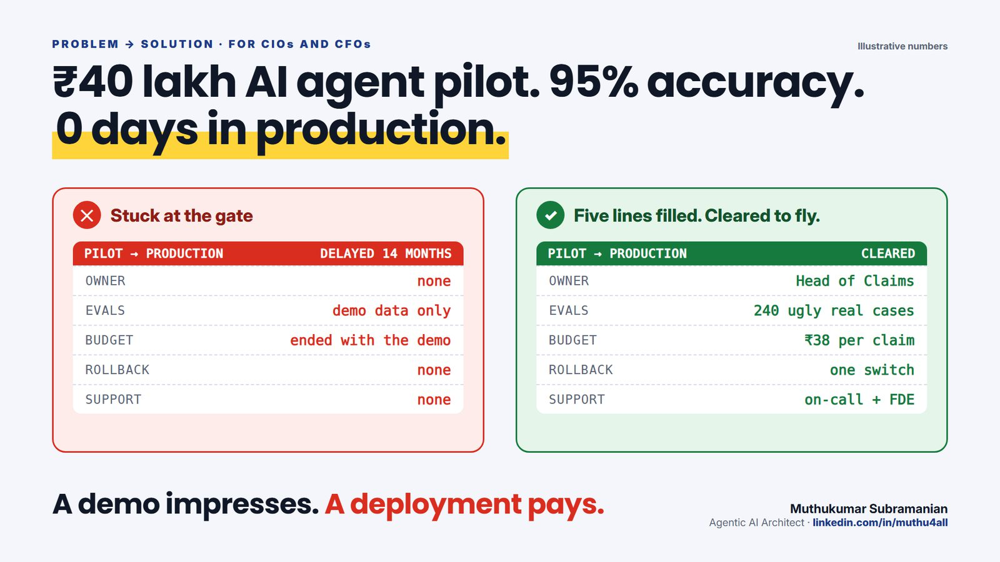

Your ₹40 Lakh AI Agent Pilot Worked. Why Is It Still Not in Production?
By Muthukumar Subramanian · Agentic AI Architect

The demo was beautiful.
The AI agent read 200 claims, matched them to policies and flagged the bad ones. 95% accuracy. The CEO clapped. Someone said "this changes everything." ₹40 lakh well spent.
That was fourteen months ago. (The numbers are illustrative. The story isn't rare.)
Today the agent still runs on a laptop in a sandbox, on a clean Excel export from last March. Real claims still go through the same fifteen-year-old core system, by hand. The vendor's invoice got paid. The business case didn't.
Nobody killed the pilot. Nobody owned it either.
I've seen this enough times to believe the headline number, even with its caveats. MIT's GenAI Divide study last year reported that about 95% of generative AI pilots showed no measurable effect on profit and loss. It's preliminary, self-reported research, so don't quote it as law. But the authors' point rings true: the failure wasn't the model. It was how companies deployed it.
Why agents pass the pilot and fail the Monday
A pilot is a controlled experiment. Production is a Monday morning.
→ The data was clean. The pilot read tidy exports. Production reads scanned PDFs, typing errors and a field that means three things.
→ The legacy system was missing. The pilot never had to log in to the 2011 core system, respect its permissions or survive its downtime.
→ Nobody tested the failures. What happens when the agent is wrong on ₹12 lakh? Who gets the call?
→ The budget ended with the demo. Pilot money ran out. Nobody budgeted for running it, monitoring it or fixing it.
→ There was no owner. The innovation team built it. The business team never asked for it. IT refused to support it.
👉 [IMAGE: B-day05-2-in-article-five-lines.png]
Caption: Five lines every agent needs before it boards. If one is blank, it's still a demo.
The solution: five lines before go-live
→ 1. Owner. One named business person whose numbers improve if this works, and who answers if it doesn't.
→ 2. Evals. A test set built from your ugliest real cases, not the demo's clean ones, and a pass mark agreed before launch.
→ 3. Budget. A running cost per month and a cost per case. If it can't beat what you pay today, stop now.
→ 4. Rollback. One switch back to the old process, tested before go-live. If you can't roll it back, don't roll it out.
→ 5. Support. Someone on call when the agent breaks at 2 AM, and a human queue for everything it isn't sure about.
The missing person: the forward deployed engineer
Here's what the best AI companies have worked out. The gap between a demo and a deployment isn't closed by a better model. It's closed by a person.
The role is called a forward deployed engineer (FDE). It's an engineer who sits with your team, not the vendor's, and ships the agent on your real systems. The title started at Palantir, and it's now everywhere in AI hiring. On Indeed's numbers, Indian FDE postings rose nearly 19-fold in a year. That's from a small base, and the title still means different things at different companies, but the demand tells you where the pain is.
A good FDE does what a pilot team never does. Sits with the claims desk for a week. Finds the three spreadsheets nobody mentioned. Gets a service account on the old system. Runs the agent in shadow mode beside the humans. Then hands it to an owner.
👉 [GIF: B-day05-4-in-article-cleared-for-production.gif]
Caption: Five checks turn green, and a delayed pilot finally departs.
👉 [IMAGE: B-day05-3-in-article-six-weeks.png]
Caption: One way to get a stuck pilot live in six weeks. An illustrative plan, not a promise.
The hard parts
→ Some pilots should die. If the cost per case doesn't work, killing it is a win. Say so early.
→ FDEs are scarce and expensive. Most companies can't hire one this year. Ask your vendor to send one, and put it in the contract.
→ The legacy system fights back. No API, no test environment, one person who understands it. Budget real time for this.
→ Shadow mode feels slow. Weeks of the agent running beside people, changing nothing. Skip it and you'll find your failures in front of customers.
→ The owner takes a risk. Nobody wants their name on an AI that might fail. Make it safe to report problems, or they'll be hidden.
The opportunity
→ For engineers: FDE is one of the best career moves in AI right now. You need software skills, patience with old systems, and the ability to sit with a claims officer and listen.
→ For Indian IT services firms: you've done on-site delivery for 30 years. FDE pods that take stuck pilots to production are a natural next offer, priced on cases processed rather than hours billed.
→ For CFOs: stop funding pilots. Fund one line of the business to production, with these five lines signed.
→ For founders: tools for shadow mode, evals on real data, and connecting agents safely to old systems.
A demo impresses. A deployment pays.
Your turn 👇
What stops most AI agent pilots in your company: no owner or no budget? Pick one.
Tag the person still maintaining last year's pilot on their laptop.